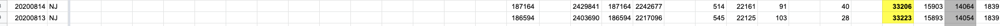
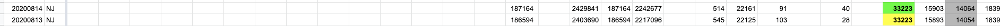

[NJ] Recoveries decrease on 8/14
State or US: New Jersey
Describe the problem Today’s recovery count results in a decrease, so the data from 8/13 should be carried forward in States Daily.
State or US: New Jersey
Describe the problem Today’s recovery count results in a decrease, so the data from 8/13 should be carried forward in States Daily.
Data was confirmed to have decreased on 8/14. The 8/13 number was carried over.
Before:  After: 